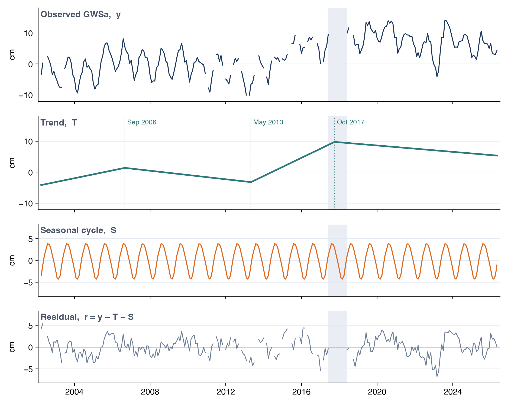
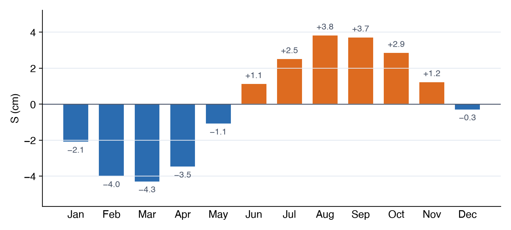
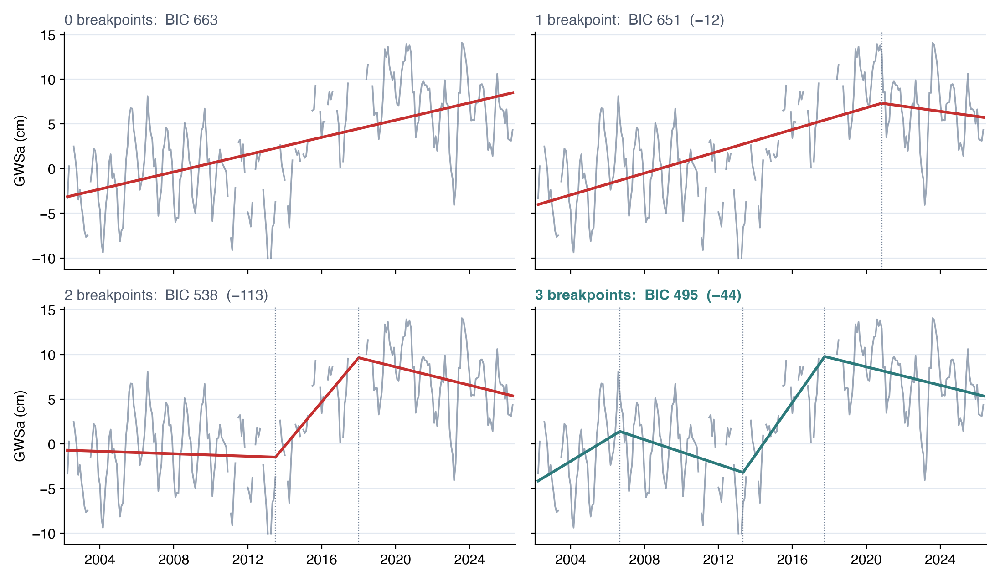
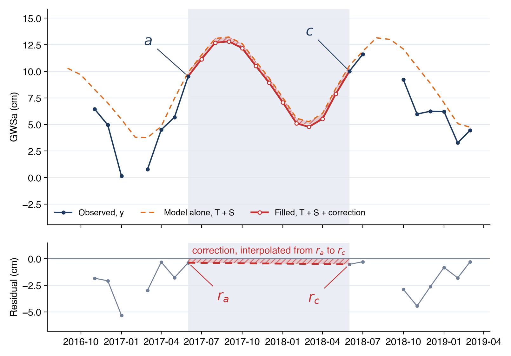
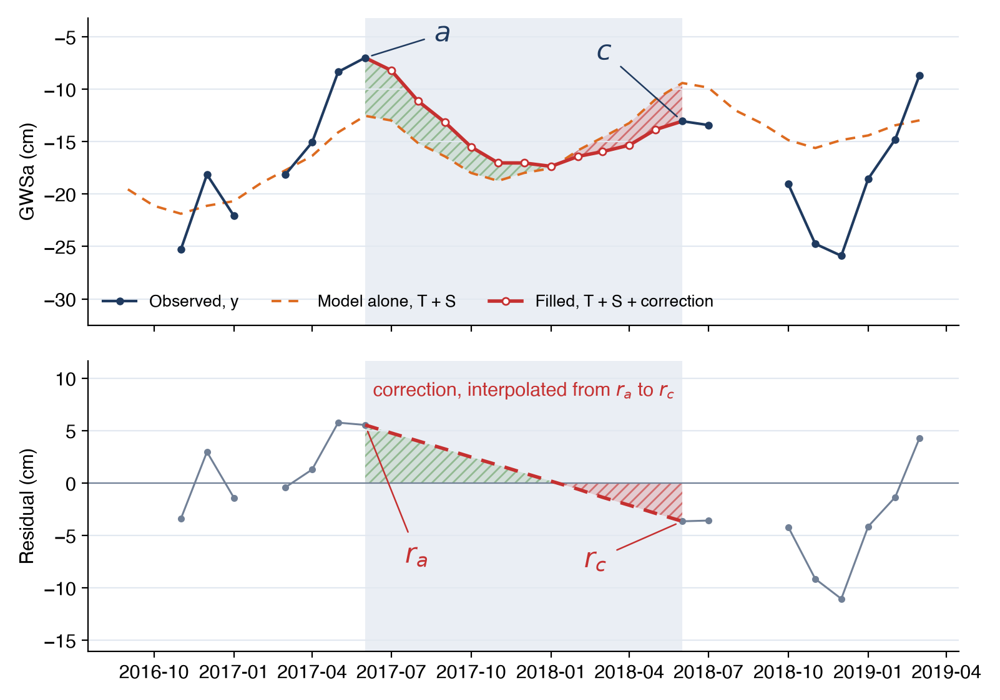
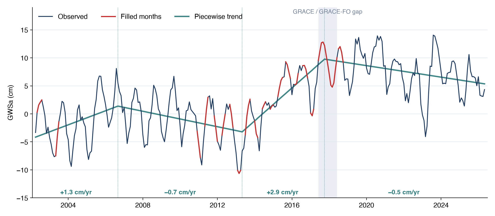

El Modelo Estacional
La opción Seasonal model estima cada mes faltante a partir de un modelo del propio registro de la región, ajustado a sus meses observados, siguiendo el enfoque de Barbosa et al. (2022) (consulta Vacíos en el Registro). Esta página presenta el modelo, cómo se ajusta, cómo se calculan los valores rellenados y qué tan precisos son.
Tendencia, ciclo estacional y residuo
La serie se descompone en una tendencia de largo plazo, un ciclo estacional que se repite cada año y un residuo:
donde y(t) es GWSa (o TWSa) en el mes t, m es el mes calendario de t (enero a diciembre), T es la tendencia, S es el ciclo estacional y r es el residuo, la parte del valor de cada mes que la tendencia y el ciclo estacional no explican.
Para el Northern Midwest Aquifer System, el modelo separa el GWSa en estas tres partes, con el vacío entre las misiones sombreado:

La tendencia recoge el ascenso y descenso lentos del almacenamiento a lo largo del registro, el ciclo estacional repite la misma oscilación anual cada año, y el residuo contiene lo que queda: los años húmedos y secos, y el ruido de los datos GRACE.
La tendencia
La tendencia es una línea recta continua por tramos con hasta tres puntos de quiebre b1, …, bk, donde cambia su pendiente:
El tiempo t se cuenta en meses desde el primer mes observado. Cada término de bisagra max(t − bj, 0) vale cero antes de su punto de quiebre y aumenta en uno por mes después de él, de modo que la pendiente es β antes del primer punto de quiebre, β + γ1 después de él, y así sucesivamente. La línea se dobla en cada punto de quiebre sin saltar. Un registro con k = 0 tiene una sola tendencia recta.
El ciclo estacional
El ciclo estacional tiene un nivel para cada mes calendario, αJan, …, αDec. El modelo completo para un mes observado i es
Los doce niveles también hacen de intercepto, así que no hay un término constante aparte. Los niveles son fijos de un año a otro: el modelo tiene un solo ciclo anual promedio, y un año húmedo aparece en el residuo y no en S.
Para el Northern Midwest Aquifer System, los niveles, desplazados para promediar cero como se describe en Ajuste del modelo, van de −4.3 cm en marzo a +3.8 cm en agosto:

Ajuste del modelo
Mínimos cuadrados con puntos de quiebre fijos
Para un conjunto dado de puntos de quiebre, las pendientes β y γj y los doce niveles αm se obtienen por mínimos cuadrados ordinarios usando solo los meses observados. Los meses faltantes no intervienen en el ajuste. Cada mes calendario debe estar observado al menos dos veces; si no, su nivel no se puede estimar de forma confiable y la aplicación deja la serie sin rellenar.
Después del ajuste, los niveles se desplazan para que el ciclo estacional promedie cero a lo largo del año, y la tendencia se desplaza hacia arriba en la misma cantidad:
La suma T + S no cambia. Con el desplazamiento, T da el nivel de largo plazo y S da la desviación de cada mes respecto a él.
Ubicación de los puntos de quiebre
Para un número dado de puntos de quiebre k, la aplicación elige sus posiciones de modo que minimicen la suma de cuadrados de los residuos (RSS) del ajuste. Los puntos de quiebre se restringen para que cada tramo de la tendencia tenga sentido:
- al menos a 48 meses (cuatro años) de cada extremo del registro, para que un tramo extremo no se ajuste a unos pocos meses
- al menos a 36 meses (tres años) entre sí, para que cada tramo entre dos puntos de quiebre abarque varios ciclos estacionales
La búsqueda se hace en dos pasos. Primero, se colocan puntos de quiebre candidatos cada tres meses y se ajusta cada combinación válida de k candidatos. Se conserva la combinación con la menor RSS. Luego, cada punto de quiebre, uno a la vez, se mueve un mes antes o después, y el movimiento se conserva si reduce la RSS. Esto se repite hasta que ningún movimiento de un mes mejora el ajuste, de modo que cada punto de quiebre termina en el mejor mes cerca del mejor candidato trimestral.
Elección del número de puntos de quiebre
Más puntos de quiebre siempre ajustan los meses observados al menos igual de bien, así que el número se elige con el criterio de información bayesiano (BIC), que agrega una penalización por cada parámetro:
donde n es el número de meses observados y p cuenta los parámetros: la primera pendiente, un cambio de pendiente y una posición por cada punto de quiebre, y los doce niveles mensuales.
La aplicación ajusta el mejor modelo con 0, 1, 2 y 3 puntos de quiebre. Partiendo de la tendencia recta, pasa a un modelo con más puntos de quiebre solo si el BIC de ese modelo es al menos 10 menor que el BIC del modelo elegido hasta ese momento. Una caída de 10 es evidencia fuerte de que el quiebre adicional es real y no un ajuste al ruido, así que la tendencia solo se dobla donde el registro cambia claramente de dirección.
Para el Northern Midwest Aquifer System, cada punto de quiebre adicional reduce el BIC en más de 10 (en 12, luego 113 y luego 44), así que la aplicación conserva los tres:

Relleno de los vacíos
Un vacío es una secuencia de uno o más meses faltantes entre dos meses observados, a antes y c después. El modelo solo, T + S, no coincidiría con los valores observados en ninguno de los extremos del vacío, porque cada mes observado tiene su propio residuo. El valor rellenado suma una corrección del residuo interpolada linealmente a lo largo del vacío:
para cada mes faltante g del vacío.
La corrección le da al relleno una forma razonable sea cual sea la longitud del vacío:
- Para un solo mes faltante, el cambio estacional de un mes al siguiente es pequeño, así que el valor rellenado queda cerca de una línea recta entre sus dos vecinos.
- Para un vacío largo, como los 11 meses entre las misiones, los meses rellenados siguen la tendencia y el ciclo estacional, subiendo y bajando con las estaciones habituales, mientras la corrección los desplaza para que coincidan con los valores observados en ambos extremos.
Los dos residuos que definen la corrección provienen de meses distintos, y nada liga uno con el otro. En el vacío entre las misiones del Northern Midwest Aquifer System resultan casi iguales (−0.38 cm en junio de 2017 y −0.53 cm en junio de 2018), así que la corrección deja cada mes rellenado apenas por debajo del modelo solo:

En el Valle Central de California, el mismo vacío empieza 5.55 cm por encima del modelo y termina 3.64 cm por debajo. La corrección baja 9.2 cm a lo largo del vacío, así que los meses rellenados empiezan muy por encima del modelo solo y terminan por debajo:

Los meses observados nunca se modifican. Los meses anteriores a la primera observación o posteriores a la última quedan vacíos, porque no hay un valor observado del otro lado al cual anclar una corrección.
GWSa y TWSa se rellenan cada uno a partir de su propio registro, con su propia tendencia y su propio ciclo estacional. Por eso, un valor rellenado de GWSa no es exactamente el TWSa rellenado menos los términos de GLDAS de ese mes. Las capas de GLDAS no tienen vacíos y nunca se rellenan.
Ejemplo: el Northern Midwest Aquifer System
Para el Northern Midwest Aquifer System, el BIC selecciona tres puntos de quiebre, en septiembre de 2006, mayo de 2013 y octubre de 2017, que dividen el registro en cuatro tramos de tendencia de +1.3, −0.7, +2.9 y −0.5 cm/año:

Los meses faltantes sueltos entre 2011 y 2017 quedan cerca de sus vecinos. A lo largo del vacío de 11 meses entre las misiones, los valores rellenados suben a 12.8 cm en septiembre de 2017 y bajan a 4.8 cm en marzo de 2018 antes de encontrarse con el primer mes de GRACE-FO, continuando el ciclo anual de la región. La aplicación muestra los mismos valores con Gap filling en Seasonal model (consulta Vacíos en el Registro).
Precisión del relleno
El relleno se probó en meses que sí tienen datos. Se ocultan algunos meses observados, se vuelve a ajustar el modelo sin ellos y los valores rellenados se comparan con los reales. Hay dos pruebas:
- Meses sueltos: se ocultan a la vez el 10% de los meses observados (26 meses), elegidos al azar a lo largo del registro.
- Vacíos largos: se oculta un bloque de 11 meses, para imitar el vacío entre las misiones. Esto se repite para seis bloques distribuidos a lo largo del registro.
Cada prueba compara el modelo estacional con dos rellenos más simples: la tendencia y el ciclo estacional sin la corrección del residuo, y la interpolación lineal entre los meses observados vecinos. La tabla da la raíz del error cuadrático medio (RMSE) de cada uno, en cm, con la incertidumbre mediana ±1σ de GRACE de la región como referencia:
Meses sueltos (RMSE, cm):
| Región | ±1σ | Modelo estacional | Tendencia + estacional | Lineal |
|---|---|---|---|---|
| Northern Midwest Aquifer System | 4.4 | 1.3 | 2.4 | 1.1 |
| Cuenca del Volta | 3.9 | 1.6 | 2.5 | 2.0 |
| Iullemeden-Irhazer Aquifer System | 1.9 | 0.9 | 1.1 | 0.8 |
| Valle Central de California | 3.4 | 3.1 | 5.3 | 3.3 |
Bloques de 11 meses (RMSE, cm):
| Región | ±1σ | Modelo estacional | Tendencia + estacional | Lineal |
|---|---|---|---|---|
| Northern Midwest Aquifer System | 4.4 | 1.5 | 2.3 | 4.7 |
| Cuenca del Volta | 3.9 | 2.6 | 2.4 | 5.1 |
| Iullemeden-Irhazer Aquifer System | 1.9 | 1.4 | 1.4 | 1.7 |
| Valle Central de California | 3.4 | 4.2 | 4.8 | 5.2 |
Tres resultados destacan:
- Para meses sueltos, el modelo estacional es casi tan bueno como la interpolación lineal, como era de esperar: en un solo mes, la corrección del residuo hace que ambos sean prácticamente iguales.
- Para vacíos de 11 meses, la interpolación lineal atraviesa en línea recta un ciclo estacional completo, y su error es de dos a tres veces el del modelo estacional en regiones con un ciclo marcado (4.7 frente a 1.5 cm en el Northern Midwest).
- En las tres primeras regiones, el error del modelo estacional está muy por debajo de la incertidumbre de GRACE. El Valle Central de California se rellena peor, con errores por encima de la incertidumbre, porque su almacenamiento responde a sequías plurianuales y años húmedos que ningún ciclo estacional promedio puede predecir dentro de un vacío largo.
El error de un valor rellenado proviene del modelo y no de GRACE, así que la aplicación no dibuja la banda de incertidumbre en los meses rellenados. En una región como el Valle Central, trata con especial cautela los resultados que dependen de meses rellenados, como la recarga de los años que el Análisis de Recarga marca como que usan meses rellenados.
Referencia
Barbosa, S. A., Pulla, S. T., Williams, G. P., Jones, N. L., Mamane, B., and Sanchez, J. L. (2022). Evaluating groundwater storage change and recharge using GRACE data: A case study of aquifers in Niger, West Africa. Remote Sensing, 14(7), 1532. doi:10.3390/rs14071532